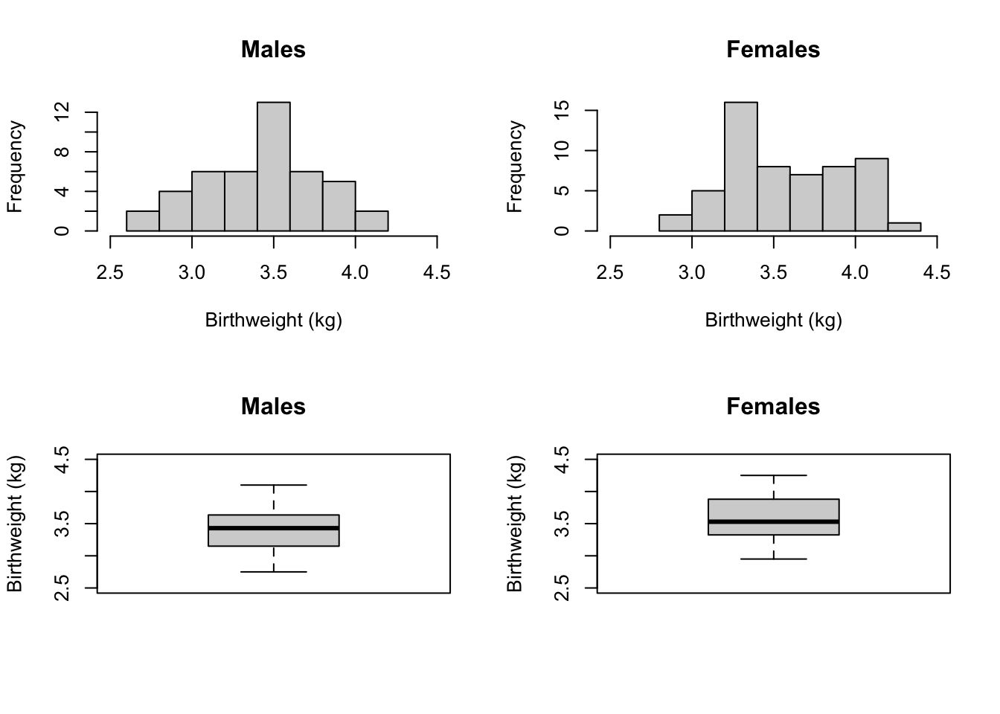

Module 5 Comparing two means
5.1 Checking data for the independent samples t-test
5.1.1 Producing histograms and boxplots by a second variable
We can create histograms and boxplots separated by a second variable in (at least) two ways: using Base R or ggplot2 graphics. We will demonstrate using the birthweight data in Example_5.1.rds.
library(ggplot2)
library(jmv)
bwt <- readRDS("data/examples/Example_5.1.rds")
summary(bwt)## gender birthweight
## Female:56 Min. :2.750
## Male :44 1st Qu.:3.257
## Median :3.450
## Mean :3.514
## 3rd Qu.:3.772
## Max. :4.250summary(bwt$gender)## Female Male
## 56 44To use Base R graphics, we can create subsets of the birthweight data, subsetted for males and females separately. Note here that gender is a factor, so we need to select based on the factor labels, not the underlying numeric code.
bwt_m <- subset(bwt, bwt$gender=="Male")
bwt_f <- subset(bwt, bwt$gender=="Female")We can now create hisotgrams and boxplots for males and females separately, in the usual way. To place the graphs next to each other in a single figure, we can use the par function. The par function sets the graphics parameters. Essentially, we want to tell R to split a plot window into a matrix with nr rows and nc columns, and we can decide to fill the cells by rows (mfrow) or columns (mfcols). For example, to plot four figures in a single plot, filled by rows, we use par(mfrow=c(2,2)).
When we are done plotting multiple graphs, we can reset the plot window by submitting par(mfrow=c(1,1)).
par(mfrow=c(2,2))
hist(bwt_m$birthweight, xlim=c(2.5, 4.5), xlab="Birthweight (kg)", main="Males")
hist(bwt_f$birthweight, xlim=c(2.5, 4.5), xlab="Birthweight (kg)", main="Females")
boxplot(bwt_m$birthweight, ylim=c(2.5, 4.5), ylab="Birthweight (kg)", main="Males")
boxplot(bwt_f$birthweight, ylim=c(2.5, 4.5), ylab="Birthweight (kg)", main="Females")
par(mfrow=c(1,1))To produce separate histograms in ggplot2, we use the facet_wrap function to create a grid of plots. We can define the variable(s) to be plotted by in the vars(), and optionally, the number of rows (nrow=) and number of columns (ncol=).
# Overall histogram of birthweight
ggplot(bwt, aes(x=birthweight)) +
geom_histogram(breaks=seq(2.5, 4.5, 0.25), colour="black", fill="grey") +
labs(x="Birthweight (kg)", y="Frequency") +
theme_classic()
# Histogram by gender
ggplot(bwt, aes(x=birthweight)) +
geom_histogram(breaks=seq(2.5, 4.5, 0.25), colour="black", fill="grey") +
facet_wrap(vars(gender), nrow=1, ncol=2) +
labs(x="Birthweight (kg)", y="Frequency") +
theme_classic()
While it is possible to use facet_wrap to produce separate boxplots, we can use the fact that the boxplot allows an x variable to be assigned to the ggplot aesthetic. By defining birthweight as the y variable and gender as the x variable, we can produce two boxplots in the same figure:
ggplot(bwt, aes(x=gender, y=birthweight)) +
geom_boxplot() +
labs(y="Birthweight (kg)", x="Gender") +
theme_classic()
5.1.2 Producing split summary statistics
The descriptives function within the jmv function allows summary statistics to be calculated within subgroups using the splitBy argument:
descriptives(data=bwt, vars=birthweight, splitBy=gender)##
## DESCRIPTIVES
##
## Descriptives
## ───────────────────────────────────────────────
## gender birthweight
## ───────────────────────────────────────────────
## N Female 56
## Male 44
## Missing Female 0
## Male 0
## Mean Female 3.587411
## Male 3.421364
## Median Female 3.530000
## Male 3.430000
## Standard deviation Female 0.3629788
## Male 0.3536165
## Minimum Female 2.950000
## Male 2.750000
## Maximum Female 4.250000
## Male 4.100000
## ───────────────────────────────────────────────5.2 Independent samples t-test
ttestIS(data=bwt, vars=birthweight, group=gender)INDEPENDENT SAMPLES T-TEST
Independent Samples T-Test
────────────────────────────────────────────────────────────────────
Statistic df p
────────────────────────────────────────────────────────────────────
birthweight Student’s t 2.296556 98.00000 0.0237731
────────────────────────────────────────────────────────────────────
ttestIS(data=bwt, vars=birthweight, group=gender, meanDiff=TRUE, ci=TRUE)INDEPENDENT SAMPLES T-TEST
Independent Samples T-Test
───────────────────────────────────────────────────────────────────────────────────────────────────────────────────────────────────
Statistic df p Mean difference SE difference Lower Upper
───────────────────────────────────────────────────────────────────────────────────────────────────────────────────────────────────
birthweight Student’s t 2.296556 98.00000 0.0237731 0.1660471 0.07230265 0.02256481 0.3095293
───────────────────────────────────────────────────────────────────────────────────────────────────────────────────────────────────
ttestIS(data=bwt, vars=birthweight, group=gender, meanDiff=TRUE, ci=TRUE, welchs=TRUE)INDEPENDENT SAMPLES T-TEST
Independent Samples T-Test
───────────────────────────────────────────────────────────────────────────────────────────────────────────────────────────────────
Statistic df p Mean difference SE difference Lower Upper
───────────────────────────────────────────────────────────────────────────────────────────────────────────────────────────────────
birthweight Student’s t 2.296556 98.00000 0.0237731 0.1660471 0.07230265 0.02256481 0.3095293
Welch’s t 2.303840 93.54377 0.0234458 0.1660471 0.07207403 0.02293328 0.3091609
───────────────────────────────────────────────────────────────────────────────────────────────────────────────────────────────────
5.3 Checking the assumptions for a Paired t-test
Before performing a paired t-test, you must check that the assumptions for the test have been met. Using the dataset Example_5.2.rds to show that the difference between the pair of measurements between the sites is normally distributed, we first need to compute a new variable of the differences and examine its histogram.
sbp <- readRDS("data/examples/Example_5.2.rds")
sbp$diff = sbp$sbp_dp - sbp$sbp_tp
hist(sbp$diff, xlab="Blood pressure (mmHg)", main="Difference in systolic blood pressure")
5.4 Paired t-Test
To perform a paired t-test we will use the dataset Example_5.2.rds.
ttestPS(data=sbp, pairs=list(list(i1 = 'sbp_dp', i2 = 'sbp_tp')), meanDiff=TRUE, ci=TRUE)##
## PAIRED SAMPLES T-TEST
##
## Paired Samples T-Test
## ───────────────────────────────────────────────────────────────────────────────────────────────────────────────────────────────────────
## statistic df p Mean difference SE difference Lower Upper
## ───────────────────────────────────────────────────────────────────────────────────────────────────────────────────────────────────────
## sbp_dp sbp_tp Student's t -0.9621117 106.0000 0.3381832 -1.261682 1.311368 -3.861596 1.338232
## ───────────────────────────────────────────────────────────────────────────────────────────────────────────────────────────────────────The syntax of the ttestPS function is a little cumbersome. The t.test function can be used as an alternative:
t.test(sbp$sbp_dp, sbp$sbp_tp, paired=TRUE)##
## Paired t-test
##
## data: sbp$sbp_dp and sbp$sbp_tp
## t = -0.96211, df = 106, p-value = 0.3382
## alternative hypothesis: true mean difference is not equal to 0
## 95 percent confidence interval:
## -3.861596 1.338232
## sample estimates:
## mean difference
## -1.261682